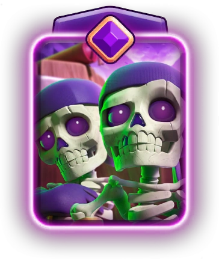
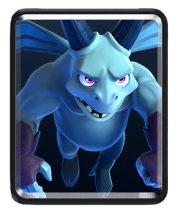
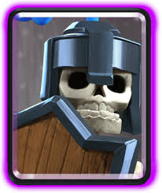
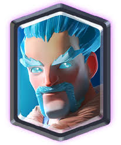
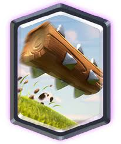
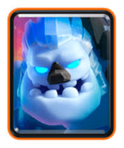
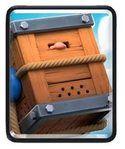
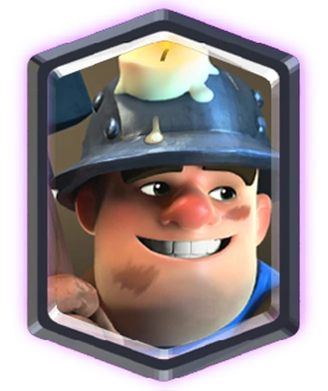
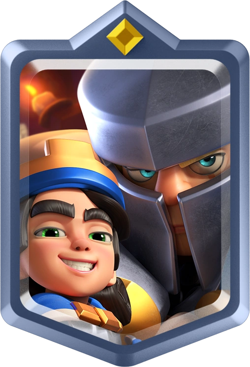

Point guard of the roster. Gets damage in for offense and hustles back to be a pivotal part of defense. He's the face of team for a reason. Not much to say about it except that it gets the job done.

Wall breakers are easy to counter and never reach tower on their own, but with the evolution they provide a threat that can be spammed out and forces negative elixer trades for the opponent

Mininos were very overtuned until recently. The range, attack speed, flying ability, and low cost makes them great on defense especially after wall breakers or guards has baited out arrows

A monster on defense and perfect for keeping things away from a mortar that is locked onto the opposing tower, guards are a card that I have really come around to. Great against prince and boss bandit, but really can be used for anything. Swiss army knife.

Bill Russell. Hakeem Olajuwon. Kobe. Lebron. These guys have nothing on ice wizard's defense. This guy is a monster. Nothing gets past him except a spell. Good luck.

Self explanatory to anyone who has played this game. No scenario where this card isn't good, does everything, all the time. Entire decks are built to try to mitigate the usefulness of this card. Use it more than I use air

Glue guy. Huge locker room presence. Puts his nose down and goes to work. All day, every day. He doesn't have a good job but he likes getting down and dirty. Sadly the deck is already good enough at defense and needs help on offense, so I am testing out other cards. Old but gold, always number 1 in my heart.

My personal favorite card right now. Super fun to use, rewards creative thinking and skillful placement. Can carry a defense or sell the game. When it works, it WORKS. Modern day JJ Watt.

Makes wall breakers, guards, and minions a legitimate threat. Elite teammate elevator. Guy can turn plumbers into all stars, talking Lillard bringing CJ McCollum to the conference finals

Card kinda sucks but its the only champion that fits and I have at a decent level. Ideally skeleton king would make a good fit, but we work with the salary cap that we have and it is what it is. Three card cycle is so strong that it makes this bum decent.
All in all, I'm pretty happy with my deck. It's taken me pretty far and lets me express more skill than most other decks in the game allow. I think it's indicative of what I like to od in other games, and involves a lot of cards that I just think are cool and fun. While some of my favorites are going to have to leave the deck, its been a good ride.